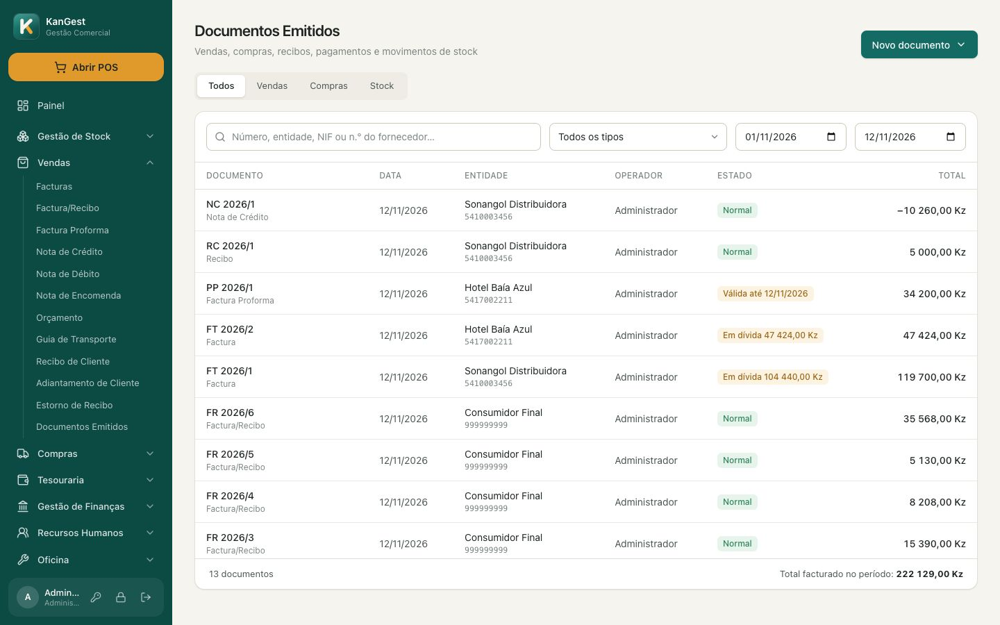
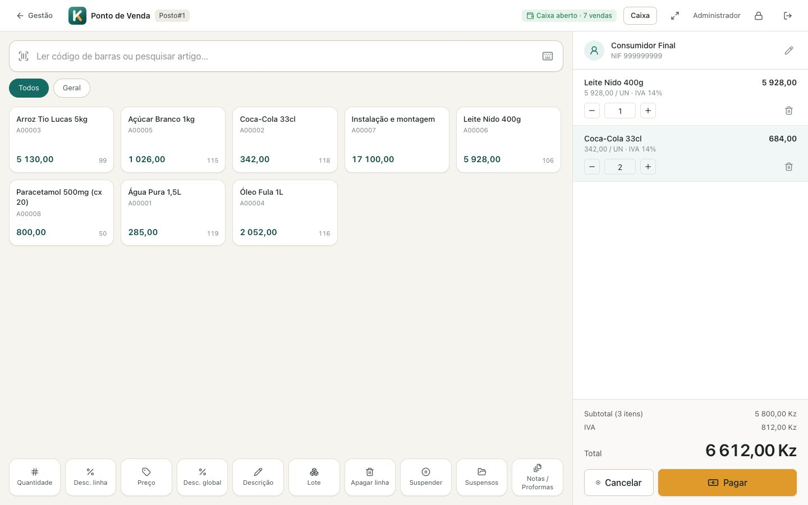
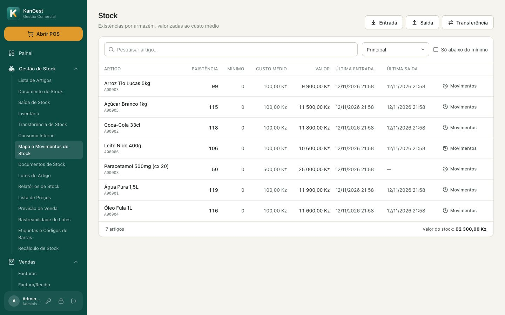
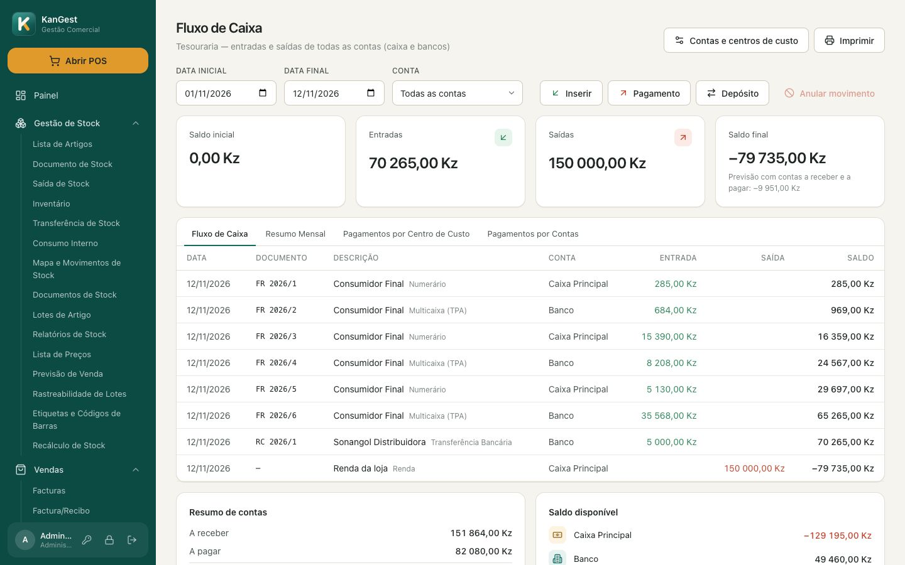
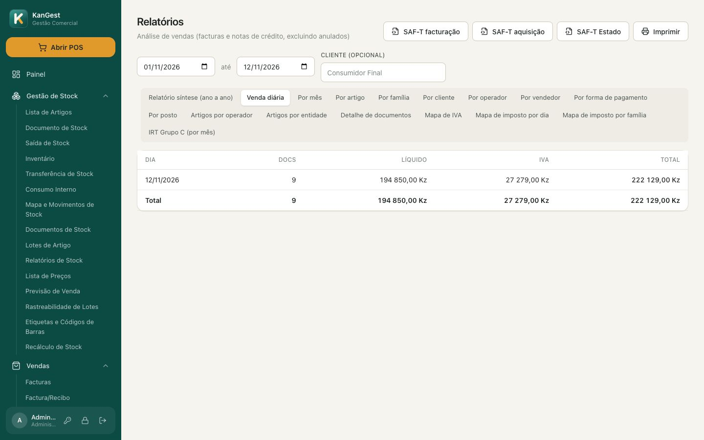
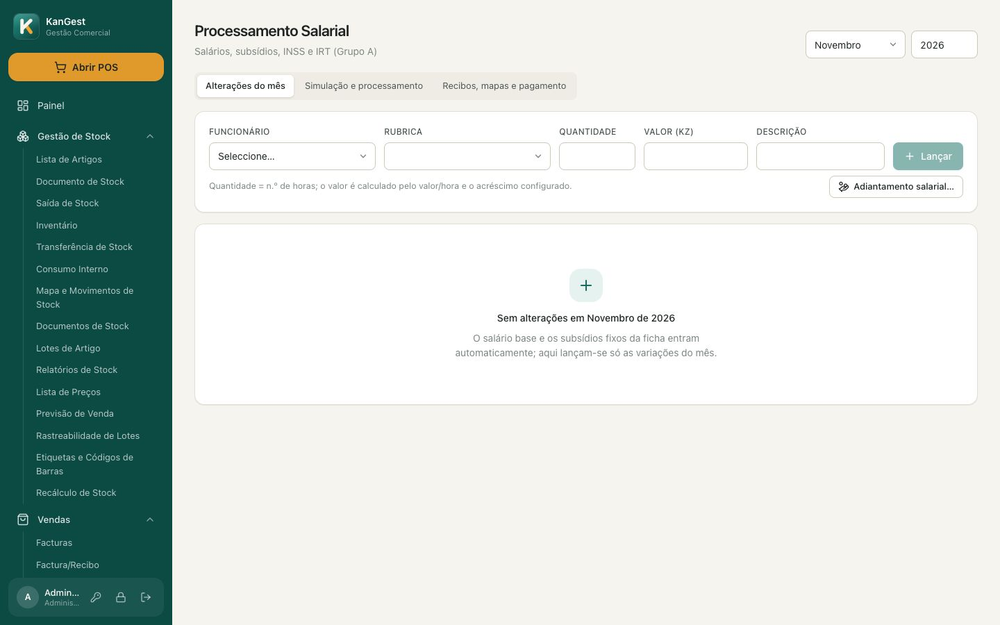
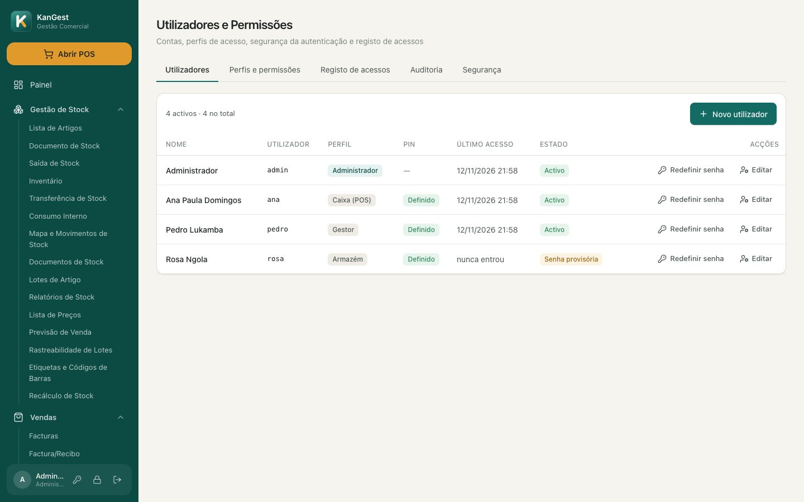
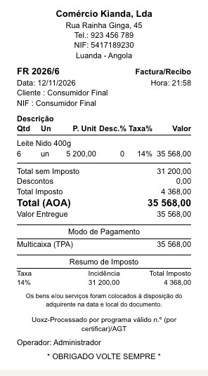
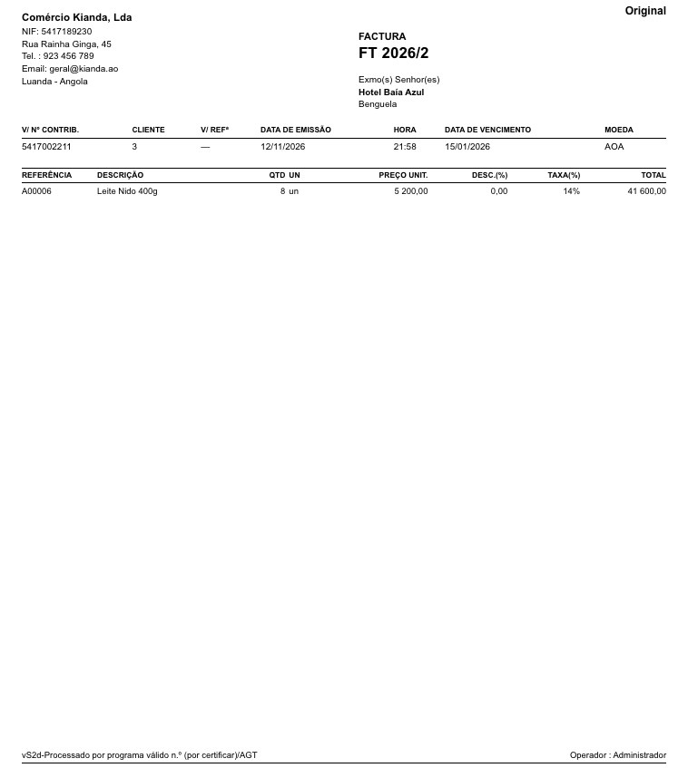

Gestão comercial completa, do balcão ao escritório
Facturação, ponto de venda, stock, compras, tesouraria, relatórios e salários num só programa para Windows e macOS. Os dados ficam no seu computador e o programa funciona mesmo sem internet.

O que o KanGest faz
Tudo o que o KIGEST GC e POS faziam, com um ecrã moderno e mais rápido.
Todos os documentos de venda
Emita os documentos com séries por posto, numeração automática e assinatura, e acompanhe o que cada cliente deve.
- Facturas e facturas-recibo
- Notas de crédito e de débito
- Proformas, orçamentos e encomendas
- Guias de transporte
- Recibos, estornos e adiantamentos
- Retenção na fonte (IRT, II, IS, IPU, IAC, IVA cativo)
- Conta corrente e aviso de vencimento
- Proforma convertida em factura
Um POS rápido para o caixa
Feito para ecrãs tácteis e para o leitor de código de barras: o operador lê, confirma e recebe.
- Leitor de códigos sempre activo
- Teclado no ecrã e ecrã inteiro
- Vendas suspensas e notas
- Vários meios de pagamento e troco
- Gaveta, talão e visor de cliente
- PIN de supervisor para descontos e preços
- Abertura e fecho de caixa
- Nota de entrega sem preços

Sabe sempre o que tem e quanto vale
Existências por armazém, valorizadas ao custo médio, com o histórico de cada movimento.
- Entradas, saídas e transferências
- Inventário e regularização
- Lotes com validade (sai o que expira primeiro)
- Kits e artigos compostos
- Quatro preços com margens
- Promoções com datas
- Etiquetas e códigos de barras
- Alertas de mínimo e ruptura

Compras, caixa e bancos em dia
Registe as facturas dos fornecedores, pague, receba e veja o saldo de cada conta.
- Facturas e encomendas a fornecedores
- Moeda estrangeira e câmbio
- Custos de importação no custo dos artigos
- Caixa, bancos e centros de custo
- Pagamentos e transferências
- Contas a receber e a pagar

Números claros e obrigações cumpridas
Veja as vendas como quiser e exporte o que a AGT pede.
- Vendas por dia, mês, artigo, cliente
- Por operador, posto e forma de pagamento
- Relatório síntese ano a ano
- Mapas de IVA
- SAF-T (AO) de facturação e aquisição
- Facturação Electrónica da AGT, com QR

Salários processados num clique
Da ficha do funcionário ao recibo e ao pagamento pela tesouraria.
- Funcionários, funções e agregado
- Subsídios e alterações mensais
- IRT e INSS calculados
- Recibos e mapas de remunerações
- Férias, faltas e adiantamentos
- Honorários de independentes

Cada pessoa vê só o que deve
Perfis de acesso por função e registo de tudo o que acontece.
- Perfis e permissões por operação
- PIN para trocar de operador
- Senhas provisórias no primeiro acesso
- Bloqueio após tentativas falhadas
- Bloqueio do ecrã por inactividade
- Registo de acessos e auditoria

Para negócios com mais do que um balcão
Vários postos em rede
Um computador faz de servidor e os caixas ligam-se a ele, cada um com a sua série e o seu caixa.
Oficina
Viaturas, ordens de serviço com peças e mão de obra, e a factura da ordem num só passo.
Cópias e actualizações
Cópia de segurança da base e actualizações verificadas antes de instalar.
Migração do KIGEST
Os dados do KIGEST GC e POS passam para o KanGest. Saber mais
Impressos com o desenho que os seus clientes conhecem
As facturas em A4 e os talões seguem os modelos do KIGEST GC e POS: logótipo e dados da empresa, «Exmo(s) Senhor(es)» com o cliente, faixa com datas e condições, resumo de imposto, coordenadas bancárias e o total do documento.
O talão sai em 80 ou 58 mm pelo diálogo de impressão ou directamente na impressora térmica, com corte de papel, logótipo e abertura da gaveta.
- Facturas, recibos, proformas, notas de crédito e guias
- Original, duplicado e 2.ª via
- Formato A4 ou A5 por tipo de documento
- Fecho de caixa em talão


Corre no computador que já tem
O instalador tem menos de 5 MB e não pede servidores nem licenças de base de dados.
| Windows | Windows 10 ou 11, 64 bits |
| macOS | macOS 10.15 ou mais recente, Apple Silicon ou Intel |
| Base de dados | No próprio computador, sem instalar nada à parte |
| Internet | Só para a Facturação Electrónica da AGT e as actualizações |
| Vários postos | Rede local; um dos computadores faz de servidor |
| Impressoras | Qualquer impressora A4 e térmicas ESC/POS de 80 ou 58 mm |
Antes de começar
O KanGest funciona sem internet?
Sim. Os dados ficam no seu computador e pode facturar sem ligação. A internet só é precisa para comunicar facturas à AGT, na Facturação Electrónica, e para receber actualizações.
Posso usar em vários computadores da loja?
Sim. Um computador faz de servidor e os outros postos ligam-se a ele pela rede local. Cada posto tem a sua série de documentos e o seu caixa.
Os documentos cumprem as regras da AGT?
O KanGest assina os documentos, gera o SAF-T (AO) de facturação e de aquisição e comunica as facturas à AGT na Facturação Electrónica. O número de certificado do programa aparece em cada documento depois de atribuído pela AGT.
Usava o KIGEST. Perco os meus dados?
Não. Os artigos, clientes, stock, documentos, dívidas e tesouraria passam para o KanGest e, no fim, comparamos os totais dos dois sistemas. Ver como funciona
Que impressoras posso usar?
Qualquer impressora A4 para facturas e as térmicas de talão ESC/POS de 80 ou 58 mm, ligadas por USB, rede ou porta série. Ver o equipamento compatível
E se o computador avariar?
Faça cópias de segurança da base de dados em Sistema → Cópia de segurança. Com uma cópia recente, instala o KanGest noutro computador e continua de onde estava.
Pronto para experimentar?
Baixe o KanGest, crie a empresa no assistente e emita a primeira factura em poucos minutos.